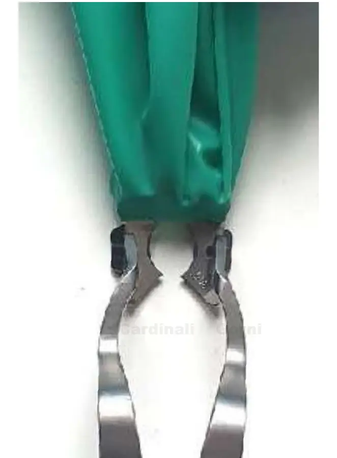
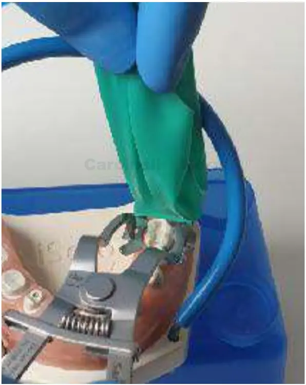

نسخه استخراجشده؛ ترجمه یا تأیید علمی انجام نشده است. وضعیت: captured
برای درمان ریشهی مولر دوم پایین، کلمپ را امتحان کردی. کلمپ پایدار است، ولی کمانش آشکارا روی مخاط راموس فشار میآورد و کشیدن ورق از روی آن سخت و دردناک خواهد بود. کدام روش کار را آسان میکند؟

در روش پاراشوت (کمان)، کلمپ و ورق با هم در دهان میروند؛ این بار کلمپ با کمانش در سوراخ ورق گیر کرده است.
روش پاراشوت دودستی است و دستیار نمیخواهد. ایمن است: اگر کلمپ از فورسپس رها شود، در سوراخ ورق میماند. دید هنگام کلمپ کردن عالی است، پس دندان هدف را راحت پیدا میکنی.

در این موقعیتها کشیدن ورق از روی کلمپی که از پیش نشسته دشوار است؛ در پاراشوت کمان از اول در سوراخ است.
اشتباه رایج: ورق را پیش از نشاندن کلمپ روی فریم محکم میکشند؛ آنوقت ورق جمع نمیشود و فکها دیده نمیشوند. ترتیب درست: اول کلمپ با ورق جمعشده، بعد فریم.